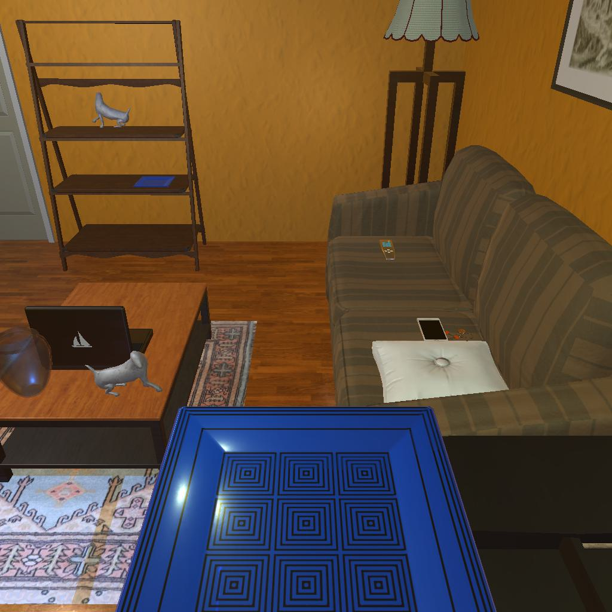

---------------------------------------------------------task: 3---------------------------------------------------------
--------------------------------------------------------------------------------------------------------------------------------------------------------------------
--------------------------------------------------------------------------------------------------------------------------------------------------------------------
Step:--------------------------------------------------------------------------19-------------------------------------------------------------------------------
----------------------------------------
VLM Prompt:
Image1:
Image2:
Image3:
**Instruction**
1. Analyze the provided images to identify all visible household objects and compare the difference between images (e.h. whether the object is opened or not and taken on hand or not), focusing on those relevant to the task description "examine the plate with the floorlamp."
2. Use the analysis of images and the task hint "The agent must find an object of the desired type, locate and turn on a light source with the desired object in-hand." to answer the question: what is the most reasonable action in the choices for the task description "examine the plate with the floorlamp"?
3. Decide and write the answer using the template: The answer is: (i): , where i is the real number. If there is no desired object in images, search every place based on **Initial Observation** to find the object. And if no one is exactly correct, choose a similar answer.
**Initial Observation**
You are in the middle of a room. Looking quickly around you, you can see armchair (1), garbagecan (1), tvstand (1), shelf (1-5), sofa (1), coffeetable (1), sidetable (1-2), drawer (1)
**Answer Choices**
(1): go to armchair 1
(2): go to garbagecan 1
(3): go to tvstand 1
(4): go to shelf 1
(5): go to shelf 2
(6): go to sofa 1
(7): go to sidetable 1
(8): go to sidetable 2
(9): go to shelf 3
(10): go to shelf 4
(11): go to shelf 5
(12): close drawer 1
(13): put plate 1 in/on drawer 1
(14): use floorlamp 1
(15): examine plate 1
(16): examine drawer 1
**Answer**
Let's think step by step by following the instructions.
----------------------------------------
----------------------------------------
Original Response:
First, we analyze the images to identify all visible household objects. In Image1, we see a sofa with some items on it, a shelf with items, a floorlamp, and a sidetable with a lamp. In Image2, we see a seagull on the floor, and the items on the sofa appear to be a magazine and a remote control. Image3 is identical to Image2.
The task is to "examine the plate with the floorlamp," but in the provided images, there is no plate visible. Therefore, we must search every place based on the Initial Observation to find the plate. We can eliminate options related to objects that are not plates or related to the task (1, 2, 3, 6, 7, 8, 12, 14, 15, 16).
The shelves might contain a plate, so we can consider options (4), (5), (9), (10), and (11). Since we don't have a specific shelf number where the plate is, we can start with the first shelf and move onwards.
The answer is: (4): go to shelf 1.
----------------------------------------
----------------------------------------
>>> Refine Original VLM Response and Get Pure Action: go to shelf 1
----------------------------------------
-----------------------------------------------------------------
Running time: 11.806353569030762 seconds
Total Money: 1.54006
-----------------------------------------------------------------
-----------------------------------------------------------------
Text Observation:You arrive at loc 3. On the shelf 1, you see a television 1, a statue 2, and a creditcard 1.
-----------------------------------------------------------------
UNSUCCEED